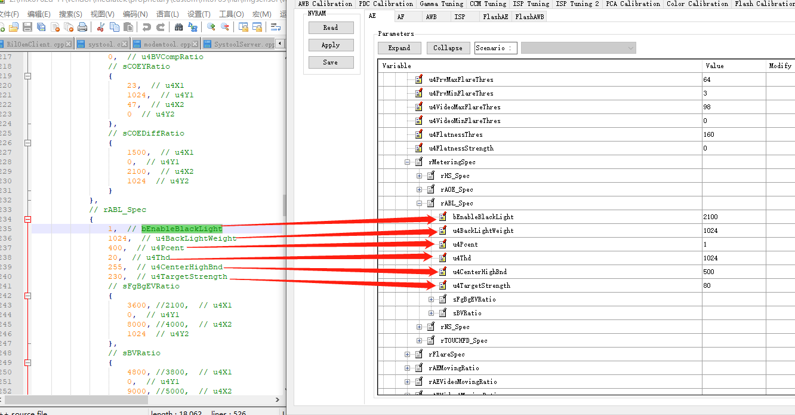
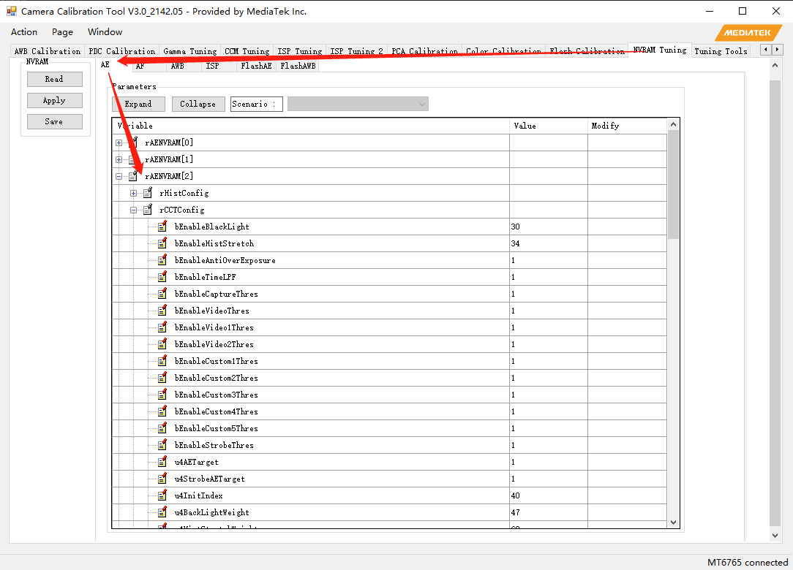
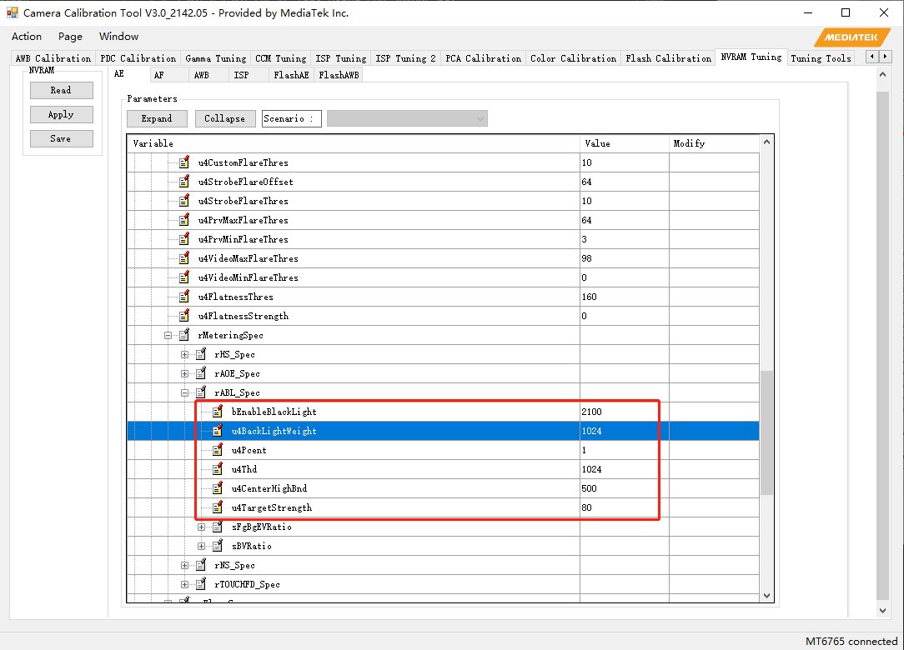

概述
AE调试记录
参考
1-2_MT6762_MT6771_AE_Tone_Debug_SOP_201905.pdf
81页:Dark area too dark
31页：Background over-exposed in face scene
1-1_MT6762_MT6771_AE_Tone_Tuning_201905.pdf
ABL (ANTI-BACK LIGHT)
NVRAM对应关系


AE ABL调试
参考如下：

户外NVRAM参数调试如下：


效果